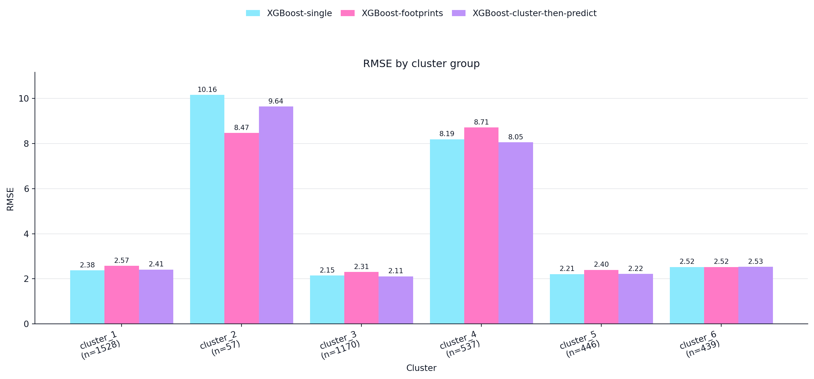
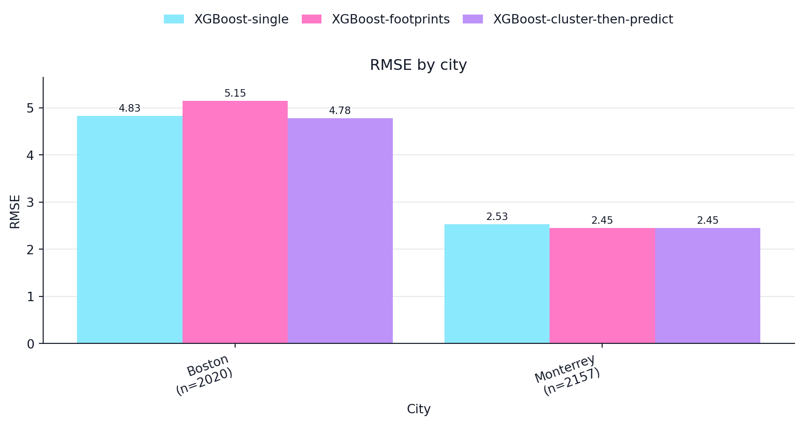

import numpy as np
def compute_mse(ground_truths, predicted_values):
mse = 0
n_data = len(ground_truths)
for i in range(n_data):
y_truth = ground_truths[i]
y_predicted = predicted_values[i]
mse += ((y_truth - y_predicted)**2)/n_data
return mse
def compute_rmse(ground_truths, predicted_values):
mse = compute_mse(ground_truths, predicted_values)
rmse = np.sqrt(mse)
return rmse
def compute_mae(ground_truths, predicted_values):
mae = 0
n_data = len(ground_truths)
for i in range(n_data):
y_truth = ground_truths[i]
y_predicted = predicted_values[i]
mae += np.abs(y_truth - y_predicted)/n_data
return maeRMSE by City and Cluster
In this notebooks we obtain \(RMSE\) plots using our validation data stratified by:
- Cluster
- City
These are the two stratified plots that are shown in the Imageable paper.
Defining the error functions
Let’s define functions to compute \(RMSE\) and also \(MAE\). I will only show \(RMSE\) but the type of error computed could be switched by calling the compute_mae function.
Open the data and the models
import joblib
MODEL_NAMES = ["XGBoost-single", "XGBoost-footprints", "XGBoost-cluster-then-predict"]
SINGLE_MODEL_PATH = "/Users/legariapena.j/Documents/imageable-2026/imageable/data/models/single_xgb_model.pkl"
FOOTPRINT_MODEL_PATH = "/Users/legariapena.j/Documents/imageable-2026/imageable/data/models/footprint_xgb_model.pkl"
CLUSTER_THEN_PREDICT_PATH = "/Users/legariapena.j/Documents/imageable-2026/imageable/data/models/cluster_ensemble_model.pkl"
SCALER_PATH = "/Users/legariapena.j/Documents/imageable-2026/imageable/data/models/cluster_ensemble_scaler.pkl"
general_model = joblib.load(SINGLE_MODEL_PATH)
footprint_model = joblib.load(FOOTPRINT_MODEL_PATH)
ctp_model = joblib.load(CLUSTER_THEN_PREDICT_PATH)
import json
DATA_PATH = "/Users/legariapena.j/Documents/imageable-2026/imageable/data/training_validation_data/data.json"
with open(DATA_PATH) as f:
data = json.load(f)
#Keep only validation data
data = [x for x in data if x["data_type"] == "validation"]
feature_vectors = [x["features"] for x in data]
feature_vectors = [
json.loads(x) if isinstance(x, str) else x for x in feature_vectors
]
clusters = [x["cluster"] for x in data]
real_heights = [x["real_height"] for x in data]RMSE by cluster
from imageable.visualization.data_visualization import plot_grouped_distribution_bars
cluster_ids = sorted(list(set(clusters)))
#Create the lists for each cluster
cluster_feature_vectors = {
cluster_id:[]
for cluster_id in cluster_ids
}
cluster_real_heights = {cluster_id: [] for
cluster_id in cluster_ids
}
for i in range(len(feature_vectors)):
cluster_id = clusters[i]
cluster_feature_vectors[cluster_id].append(feature_vectors[i])
cluster_real_heights[cluster_id].append(real_heights[i])
results_by_cluster = {
cluster_id:{
"rmse":[],
"mae":[],
"mse":[]
}
for cluster_id in cluster_ids
}
for cluster_id in cluster_ids:
bin_data = cluster_feature_vectors[cluster_id]
bin_data = np.array(bin_data)
bin_labels = cluster_real_heights[cluster_id]
predictions_general = general_model.predict(bin_data)
#for the footprint model we need to extract only the footprint features
footprint_indices = [0,1,2,3,4,5,6,7,8,9,10,11,12]
bin_data_footprint = bin_data[:, footprint_indices]
predictions_footprint = footprint_model.predict(bin_data_footprint)
predictions_cluster_then_predict = ctp_model.predict(bin_data)
mse_general = compute_mse(bin_labels, predictions_general)
rmse_general = compute_rmse(bin_labels, predictions_general)
mae_general = compute_mae(bin_labels, predictions_general)
mse_footprint = compute_mse(bin_labels, predictions_footprint)
rmse_footprint = compute_rmse(bin_labels, predictions_footprint)
mae_footprint = compute_mae(bin_labels, predictions_footprint)
mse_cluster_then_predict = compute_mse(bin_labels, predictions_cluster_then_predict)
rmse_cluster_then_predict = compute_rmse(bin_labels, predictions_cluster_then_predict)
mae_cluster_then_predict = compute_mae(bin_labels, predictions_cluster_then_predict)
results_by_cluster[cluster_id]["rmse"] = [rmse_general, rmse_footprint, rmse_cluster_then_predict]
results_by_cluster[cluster_id]["mae"] = [mae_general, mae_footprint, mae_cluster_then_predict]
results_by_cluster[cluster_id]["mse"] = [mse_general, mse_footprint, mse_cluster_then_predict]
cluster_names = [f"cluster_{cluster_id+1}" for cluster_id in cluster_ids]
dictionary_for_plot_cluster = {
model_name: [results_by_cluster[cluster_id]["rmse"][i] for cluster_id in cluster_ids] for i, model_name in enumerate(MODEL_NAMES)
}
plot = plot_grouped_distribution_bars(
groups = cluster_names,
figsize = (13,6),
model_names = MODEL_NAMES,
rmse = dictionary_for_plot_cluster,
title = "RMSE by cluster group",
x_label = "Cluster",
y_label = "RMSE",
savepath = "/Users/legariapena.j/Documents/imageable-2026/imageable/data/paper_images/rmse_clusters.jpg",
counts = [len(cluster_feature_vectors[cluster_id]) for cluster_id in cluster_ids],
show_n = True,
order = "input"
)
RMSE by City
#Get the cities
cities = [x["city"] for x in data]
city_names = sorted(list(set(cities)))
#Fill for every city
#The process is analogous to what we did for the clusters.
city_feature_vectors = {city_name: [] for city_name in city_names}
city_real_heights = {city_name: [] for city_name in city_names}
for i in range(len(feature_vectors)):
city_name = cities[i]
city_feature_vectors[city_name].append(feature_vectors[i])
city_real_heights[city_name].append(real_heights[i])
results_by_city = {city_name: {"rmse":[], "mae":[], "mse":[]} for city_name in city_names}
for city_name in city_names:
bin_data = city_feature_vectors[city_name]
bin_data = np.array(bin_data)
bin_labels = city_real_heights[city_name]
predictions_general = general_model.predict(bin_data)
#for the footprint model we need to extract only the footprint features
footprint_indices = [0,1,2,3,4,5,6,7,8,9,10,11,12]
bin_data_footprint = bin_data[:, footprint_indices]
predictions_footprint = footprint_model.predict(bin_data_footprint)
predictions_cluster_then_predict = ctp_model.predict(bin_data)
mse_general = compute_mse(bin_labels, predictions_general)
rmse_general = compute_rmse(bin_labels, predictions_general)
mae_general = compute_mae(bin_labels, predictions_general)
mse_footprint = compute_mse(bin_labels, predictions_footprint)
rmse_footprint = compute_rmse(bin_labels, predictions_footprint)
mae_footprint = compute_mae(bin_labels, predictions_footprint)
mse_cluster_then_predict = compute_mse(bin_labels, predictions_cluster_then_predict)
rmse_cluster_then_predict = compute_rmse(bin_labels, predictions_cluster_then_predict)
mae_cluster_then_predict = compute_mae(bin_labels, predictions_cluster_then_predict)
results_by_city[city_name]["rmse"] = [rmse_general, rmse_footprint, rmse_cluster_then_predict]
results_by_city[city_name]["mae"] = [mae_general, mae_footprint, mae_cluster_then_predict]
results_by_city[city_name]["mse"] = [mse_general, mse_footprint, mse_cluster_then_predict]
dictionary_for_plot_city = {
model_name: [results_by_city[city_name]["rmse"][i] for city_name in city_names] for i, model_name in enumerate(MODEL_NAMES)
}
counts_city = [len(city_real_heights[city_name]) for city_name in city_names]
plot = plot_grouped_distribution_bars(
groups = city_names,
model_names = MODEL_NAMES,
rmse = dictionary_for_plot_city,
counts = counts_city,
show_n = True,
title = "RMSE by city",
x_label = "City",
y_label = "RMSE",
savepath = "/Users/legariapena.j/Documents/imageable-2026/imageable/data/paper_images/rmse_city.jpg",
order = "input"
)